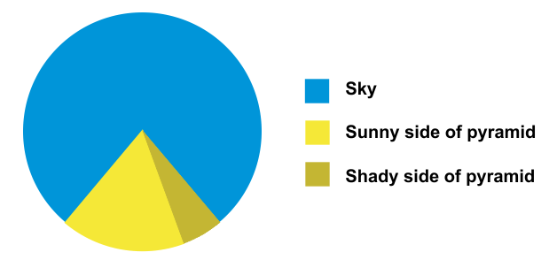
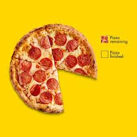

{kind=link}
{kind=link}
!uv pip install matplotlib06 Data Visualization
Մարտիրոս Սարյան, լուսանկարի հղումը
 (ToDo)
(ToDo)
Song reference - ToDo
📌 Նկարագիր
📺 Տեսանյութեր
🏡 Տնային
📚 Նյութը
Mark Hamazaspyan’s slides from YSU ASDS Masters Data Visualization course. - Դինոզավրիկ ու pie chart-եր - Data visuzalization in news
Good collections - Data Viz Catalog - Data-to-viz project
Լավ օրինակներ
Infocom: Եթե Հայաստանում 100 մարդ լիներ
Infocom: Երբ քո գնացքը դու չես վարում. հայկական երկաթուղու ռուսական մենաշնորհը
Matplotlib
import numpy as np
import matplotlib.pyplot as pltx = [1, 2, 3, 4, 5, 6, 7, 8]
y = [11, 14, 8, 9, 10, 11, 14, 14]# Scatter Plot
plt.scatter(x, y)
plt.show()
# Line Plot
plt.plot(x, y)
plt.show(){kind=link}
# Bar Plot
plt.bar(x, y)
plt.show(){kind=link}
Histogram
Քառակուսի հիմնադրամի վիդեո
plt.hist([1, 2, 2, 4, 4, 4, 4, 3, 3, 3])#, bins=4)
plt.show(){kind=link}
Pie chart
 
# Pie Chart
plt.pie([10, 20, 30, 40], labels=['A', 'B', 'C', 'D'])
plt.show(){kind=link}
Modifications
Adding title and labels
plt.plot(x, y)
plt.title("մեր գրաֆիկ")
plt.xlabel('իքիկ')
plt.ylabel('իգրեկիկ')
plt.show(){kind=link}
Legend
plt.plot(x, y, label='Line 1')
plt.legend()#loc='upper left', frameon=False)
plt.show(){kind=link}
Gridlines
{kind=link}
plt.plot(x, y)
plt.grid(which='major', linestyle='-', linewidth=3)
plt.grid(which='minor', linestyle='dashdot', linewidth=0.5)
plt.minorticks_on()
plt.show(){kind=link}
Տատիկի տնից վերադարձող գրաֆիկ
plt.plot(x, y, linewidth=30)
plt.show(){kind=link}
Color, style, markers, opacity
plt.plot(x, y, linewidth=2,
color="#00ff8c", linestyle='--', # color='green'
marker='*', markersize=10,
alpha=0.5, label='Line 1')
plt.show(){kind=link}
Changing scales
plt.plot([1, 2, 3, 4], [1, 10, 100, 1000])
plt.yscale('log')
plt.show(){kind=link}
Text and annotations
plt.plot([1, 2, 3, 4], [4, 3, 2, 1])
plt.text(1, 3, 'Text Here')
plt.annotate('Point Here', xy=(2, 3), xytext=(3, 4),
arrowprops={"facecolor":'green'})
plt.show(){kind=link}
Changin style
plt.style.use('ggplot') # ggplot comes from R
plt.plot(x, y)
plt.show(){kind=link}
print(plt.style.available)
# tableau-colorblind10['Solarize_Light2', '_classic_test_patch', '_mpl-gallery', '_mpl-gallery-nogrid', 'bmh', 'classic', 'dark_background', 'fast', 'fivethirtyeight', 'ggplot', 'grayscale', 'petroff10', 'seaborn-v0_8', 'seaborn-v0_8-bright', 'seaborn-v0_8-colorblind', 'seaborn-v0_8-dark', 'seaborn-v0_8-dark-palette', 'seaborn-v0_8-darkgrid', 'seaborn-v0_8-deep', 'seaborn-v0_8-muted', 'seaborn-v0_8-notebook', 'seaborn-v0_8-paper', 'seaborn-v0_8-pastel', 'seaborn-v0_8-poster', 'seaborn-v0_8-talk', 'seaborn-v0_8-ticks', 'seaborn-v0_8-white', 'seaborn-v0_8-whitegrid', 'tableau-colorblind10']Zoom in and out
plt.plot(x, y)
plt.xlim([0, 6])
plt.ylim([8, 11])
plt.show(){kind=link}
Changing x, y thicks
plt.plot([1, 2, 3, 4], [1, 4, 9, 16])
plt.xticks([1,2,3,4], ['One', 'Two', 'Three', 'Four'])
plt.yticks([1, 4, 16], ['մեկի քառակուսի', 'երկուսի', 'չորսի'])
plt.show(){kind=link}
Saving
plt.plot([1, 2, 3, 4], [4, 3, 2, 1])
plt.savefig('my_plot.png')
plt.savefig('my_plot.pdf',
dpi=300) # dots per inch{kind=link}
Multiple plots
Fig, axes
plt.plot([1, 2, 3, 4], [1, 4, 9, 16], linewidth=2.0, alpha=1, label="a")
plt.plot([1, 2, 3, 4], [1, 8, 27, 64], linewidth=2.0, alpha=0.5, label="b")
plt.bar([1, 2, 3, 4], [11, 22, 1, 1], label="c")
plt.legend()
plt.show(){kind=link}
fig, axs = plt.subplots(2, 2) # Creates a grid of 2 rows and 2 columns
plt.show(){kind=link}
fig, axs = plt.subplots(2, 2) # Creates a grid of 2 rows and 2 columns
axs[0, 0].plot([1, 2, 3, 4], [1, 4, 9, 16]) # Plots on the subplot in the first row and first column
axs[0, 1].bar([1, 2, 3, 4], [1, 4, 9, 16]) # Plots a bar chart on the subplot in the first row and second column
plt.show(){kind=link}
# The subplots share both x and y axes
fig, axs = plt.subplots(2, 2,
sharex=True,
sharey=True)
axs[0, 0].plot([1, 2, 3, 4], [1, 4, 9, 16])
axs[0, 1].bar([1, 2, 3, 4], [1, 4, 9, 16])
plt.show(){kind=link}
fig, axs = plt.subplots(2, 2)
axs[0, 0].plot([1, 2, 3, 4], [1, 4, 9, 16])
axs[0, 1].bar([1, 2, 3, 4], [1, 4, 9, 16])
# Sets the width and height spacing
fig.subplots_adjust(wspace=0.5, hspace=0.3)
plt.show(){kind=link}
fig, axs = plt.subplots(2, 2)
axs[0, 0].plot([1, 2, 3, 4], [1, 4, 9, 16])
axs[0, 1].bar([1, 2, 3, 4], [1, 4, 9, 16])
axs[0, 0].set_title('First Subplot')
axs[0, 1].set_title('Second Subplot')
plt.show(){kind=link}
fig.savefig("all4.png")
Subplots
plt.figure(figsize=(10,10))
plt.subplot(211)
plt.plot([1, 2, 3, 4], [1, 4, 9, 16])
plt.ylabel("առաջին y")
# plt.subplot(112)
plt.subplot(2, 1, 2)
plt.bar([1, 2, 3, 4], [1, 4, 9, 16], color="#ff00ff")
plt.ylabel("y")
plt.show(){kind=link}
Animation
https://matplotlib.org/stable/users/explain/animations/animations.html
import numpy as np
import matplotlib.pyplot as plt
from matplotlib.animation import FuncAnimation
# Prepare the figure and initial line.
fig, ax = plt.subplots()
x = np.linspace(0, 2 * np.pi, 200)
line, = ax.plot(x, np.sin(x))
ax.set_ylim(-1.1, 1.1)
ax.set_xlabel("x")
ax.set_ylabel("sin(x + phase)")
ax.set_title("Animating a Sine Wave")
# Update function called once per frame.
def update(frame):
phase_shift = frame / 10 # adjust speed via denominator
line.set_ydata(np.sin(x + phase_shift))
return line,
# Create the animation: 200 frames, 50 ms between frames.
ani = FuncAnimation(fig, update, frames=200, interval=50, blit=True)
plt.show(){kind=link}
# you may need to install ffmpeg and pillow
ani.save("sine_wave.gif", writer="pillow", fps=20)
# ani.save("sine_wave.mp4", writer="ffmpeg", dpi=120)fig, ax = plt.subplots()
rng = np.random.default_rng(19680801)
data = np.array([20, 20, 20, 20])
x = np.array([1, 2, 3, 4])
artists = []
colors = ['tab:blue', 'tab:red', 'tab:green', 'tab:purple']
for i in range(20):
data += rng.integers(low=0, high=10, size=data.shape)
container = ax.barh(x, data, color=colors)
artists.append(container)
ani = animation.ArtistAnimation(fig=fig, artists=artists, interval=400)
ani.save("bars.gif", writer="pillow", fps=20){kind=link}
🏡Տնային
Կարաք փորձեք կոդ գրել որ սենց բաներ կսարքի
Plotly
https://plotly.com/python/
!uv pip install plotlyUsing Python 3.10.18 environment at: C:\Users\hayk_\.conda\envs\lectures
Resolved 3 packages in 519ms
Downloading plotly (9.2MiB)
Downloading plotly
Prepared 2 packages in 12.57s
Installed 2 packages in 1.23s
+ narwhals==1.46.0
+ plotly==6.2.0import plotly.express as px # plotly.go graphing objects
import pandas as pddf = px.data.tips()
df.rename(columns={'sex':'gender'}, inplace=True)
df| total_bill | tip | gender | smoker | day | time | size | |
|---|---|---|---|---|---|---|---|
| 0 | 16.99 | 1.01 | Female | No | Sun | Dinner | 2 |
| 1 | 10.34 | 1.66 | Male | No | Sun | Dinner | 3 |
| 2 | 21.01 | 3.50 | Male | No | Sun | Dinner | 3 |
| 3 | 23.68 | 3.31 | Male | No | Sun | Dinner | 2 |
| 4 | 24.59 | 3.61 | Female | No | Sun | Dinner | 4 |
| ... | ... | ... | ... | ... | ... | ... | ... |
| 239 | 29.03 | 5.92 | Male | No | Sat | Dinner | 3 |
| 240 | 27.18 | 2.00 | Female | Yes | Sat | Dinner | 2 |
| 241 | 22.67 | 2.00 | Male | Yes | Sat | Dinner | 2 |
| 242 | 17.82 | 1.75 | Male | No | Sat | Dinner | 2 |
| 243 | 18.78 | 3.00 | Female | No | Thur | Dinner | 2 |
244 rows × 7 columns
!uv pip install nbformat>=4.2.0Using Python 3.10.18 environment at: C:\Users\hayk_\.conda\envs\lectures
Audited 1 package in 10mspx.scatter(x=df["total_bill"], y=df["tip"])Unable to display output for mime type(s): application/vnd.plotly.v1+jsonpx.scatter(df, 'total_bill', 'tip')Unable to display output for mime type(s): application/vnd.plotly.v1+jsonpx.scatter(df, 'total_bill', 'tip', color='gender')Unable to display output for mime type(s): application/vnd.plotly.v1+jsonimport seaborn as sns
sns.scatterplot(df, x="total_bill", y="tip", hue="gender"){kind=link}
Initials of Samuel Norman Seaborn: https://en.wikipedia.org/wiki/Sam_Seaborn
Basically, an inside joke related to the origin of the name “Seaborn”. Nothing serious.
https://seaborn.pydata.org/faq.html#why-is-seaborn-imported-as-sns
Source: https://github.com/mwaskom/seaborn/issues/229
px.scatter(df, 'total_bill', 'tip', color='gender', size='size')Unable to display output for mime type(s): application/vnd.plotly.v1+jsonpx.scatter(df, 'total_bill', 'tip', color='gender', symbol="smoker")Unable to display output for mime type(s): application/vnd.plotly.v1+jsonHistogram
px.histogram(df, 'tip')Unable to display output for mime type(s): application/vnd.plotly.v1+jsonpx.histogram(df, 'tip', nbins=10)Unable to display output for mime type(s): application/vnd.plotly.v1+jsonpx.histogram(df, 'tip', nbins=10, color='gender')Unable to display output for mime type(s): application/vnd.plotly.v1+jsonpx.histogram(df, x="total_bill", color="gender", barmode="overlay")Unable to display output for mime type(s): application/vnd.plotly.v1+jsonpx.histogram(df, x="total_bill", color="gender", barmode="group")Unable to display output for mime type(s): application/vnd.plotly.v1+jsonpx.histogram(df, x="total_bill", color="gender", barmode="stack",
histnorm="probability density",
log_x=True, title="Գույնավոր սյուներ")Unable to display output for mime type(s): application/vnd.plotly.v1+jsonhelp(px.histogram)Bar
px.bar(df, x="day", y="total_bill", color="gender", barmode="group")Unable to display output for mime type(s): application/vnd.plotly.v1+jsonBox plot
px.box(df, x="day", y="total_bill", color="gender")Unable to display output for mime type(s): application/vnd.plotly.v1+jsonpx.histogram(df, 'tip')Unable to display output for mime type(s): application/vnd.plotly.v1+jsonpx.violin(df, y="tip", x="gender", box=True, points="all")Unable to display output for mime type(s): application/vnd.plotly.v1+jsonDensity plot
px.density_heatmap(df, x="total_bill", y="tip")Unable to display output for mime type(s): application/vnd.plotly.v1+jsonՎատ գրաֆիկ
px.pie(df, names="gender", title="Gender Distribution")Unable to display output for mime type(s): application/vnd.plotly.v1+json# մի քիչ ավելի քիչ վատ գրաֆիկ
px.pie(df, names="gender", title="Gender Distribution", hole=0.7)Unable to display output for mime type(s): application/vnd.plotly.v1+jsonԹիթիզ գրաֆիկներ
px.scatter_3d(df, x="total_bill", y="tip", z="size", color="gender")Unable to display output for mime type(s): application/vnd.plotly.v1+jsonpx.sunburst(df, path=["gender", "smoker", "day"], values="total_bill")Unable to display output for mime type(s): application/vnd.plotly.v1+jsonFacets
px.scatter(df, x="total_bill", y="tip", color="gender")Unable to display output for mime type(s): application/vnd.plotly.v1+jsonpx.scatter(df, x="total_bill", y="tip", facet_col='gender')Unable to display output for mime type(s): application/vnd.plotly.v1+jsonpx.scatter(df, x="total_bill", y="tip", facet_col='gender', facet_row='smoker')Unable to display output for mime type(s): application/vnd.plotly.v1+jsonpx.scatter(df, x="total_bill", y="tip", color='time', facet_row='gender', facet_col='smoker')Unable to display output for mime type(s): application/vnd.plotly.v1+jsonՍովորական գրաֆիկներին հավելումներ
px.scatter(df, x='total_bill', y='tip', trendline="ols") # ordinary least squaresUnable to display output for mime type(s): application/vnd.plotly.v1+jsonpx.scatter(df, x='total_bill', y='tip', marginal_x='violin', marginal_y='box')Unable to display output for mime type(s): application/vnd.plotly.v1+jsonSaving
fig = px.scatter(df, x='size', y=['tip', 'total_bill'])
figUnable to display output for mime type(s): application/vnd.plotly.v1+jsonfig.write_html("scatter.html")!uv pip install -U kaleidoUsing Python 3.10.18 environment at: C:\Users\hayk_\.conda\envs\lectures
Resolved 6 packages in 1.22s
Audited 6 packages in 3msfig --------------------------------------------------------------------------- NameError Traceback (most recent call last) Cell In[123], line 1 ----> 1 eval(fig.to_json()).keys() File <string>:1 NameError: name 'true' is not defined
Wordcloud
!pip install wordcloudfrom wordcloud import WordCloud
import matplotlib.pyplot as plt
text = """Տխուր գիշեր, տրտում գիշեր.
Վիշտս ու ես ենք արթուն մենակ
Եվ ուզում ենք մի լավ հիշել,
Թե որտեղից իրար գըտանք։
Ասա, իմ վիշտ, իմ սև թախիծ,
Այ անբաժան կյանքիս ընկեր,
Դու որ օրից կամ որտեղից,
Ինչ դեպքով ես ինձ հետ ընկել...
Ու գալիս են սև-սև հուշեր...
Տըխուր գիշեր, տըրտում գիշեր..."""
wordcloud = WordCloud(
width=800,
height=400,
background_color="white",
# https://fonter.am/en/fonts/atyan-dsegh
font_path="assets/Atyan Dsegh regular.ttf",
colormap="viridis"
)
wordcloud.generate(text)
plt.figure(figsize=(10, 5))
plt.imshow(wordcloud, interpolation="bilinear")
plt.show()
{kind=link}
Stopwords
https://www.facebook.com/100000820931079/videos/3018806708156664/
from wordcloud import STOPWORDS
import requests
print(STOPWORDS)
STOPWORDS_URL = "https://raw.githubusercontent.com/aprikyan/neplo-telegram-analyzer/refs/heads/main/stopwords.txt"
response = requests.get(STOPWORDS_URL)
armenian_stopwords = set(response.text.splitlines())
armenian_stopwords = armenian_stopwords | {"շատ", "այնպես", "թե", "ձեր"}{"i'll", 'up', "you'll", 'below', 'she', 'than', 'under', 'hers', 'nor', 'so', 'how', 'an', 'him', 'in', "it's", 'was', "hasn't", 'or', "wouldn't", 'since', 'again', 'very', "isn't", "shan't", 'did', 'could', 'our', 'were', 'further', 'hence', 'by', 'yours', "what's", 'ever', 'into', 'we', 'her', "haven't", "how's", 'having', "shouldn't", 'himself', "wasn't", "she's", 'while', 'do', "let's", 'therefore', 'http', "i'm", 'its', "why's", 'ours', 'be', 'if', 'these', 'more', 'when', "she'll", "i'd", 'which', "didn't", 'other', "hadn't", 'of', 'then', "doesn't", "mustn't", 'he', 'to', 'with', 'has', "you've", "he'd", 'k', 'been', 'because', 'most', 'such', 'between', 'their', "they're", 'those', 'your', 'over', 'else', 'like', 'can', 'me', 'and', 'for', 'own', "can't", 'r', 'myself', 'too', 'out', 'being', "that's", 'at', 'why', 'only', "couldn't", "where's", 'from', "you're", 'there', 'his', "i've", 'are', 'does', 'after', 'down', 'you', 'cannot', 'once', "who's", 'doing', 'www', 'yourselves', "won't", 'as', "they've", 'however', "you'd", 'some', 'should', 'through', "we've", 'themselves', "aren't", "we'll", 'few', 'my', 'not', 'i', 'any', 'here', 'above', 'shall', "don't", "he's", 'also', 'otherwise', 'against', 'is', "they'd", 'this', "they'll", "weren't", 'until', 'about', 'but', "here's", 'whom', 'all', 'where', "we're", 'they', 'just', 'a', 'ought', 'same', 'them', 'am', 'off', 'what', "he'll", 'each', "we'd", 'on', 'itself', 'com', "when's", 'would', 'have', 'ourselves', 'theirs', 'it', 'before', "she'd", 'no', 'during', 'had', 'that', 'both', 'get', 'the', 'who', "there's", 'herself', 'yourself'}
wordcloud = WordCloud(
width=800,
height=400,
background_color="white",
# https://fonter.am/en/fonts/atyan-dsegh
font_path="assets/Atyan Dsegh regular.ttf",
colormap="rainbow",
stopwords=armenian_stopwords
)
wordcloud.generate(text)
plt.figure(figsize=(10, 5))
plt.imshow(wordcloud, interpolation="bilinear")
plt.show(){kind=link}
Mask
import os
from PIL import Image
import numpy as np
import matplotlib.pyplot as plt
from wordcloud import WordCloud, ImageColorGenerator
parrot_color = np.array(Image.open("assets/mark_data_viz/parrot-by-jose-mari-gimenez2.jpg"))
# subsample by factor of 3. Very lossy but for a wordcloud we don't really care.
parrot_color = parrot_color[::3, ::3]{kind=link}
# create mask white is "masked out"
parrot_mask = parrot_color.copy()
parrot_mask[parrot_mask.sum(axis=2) == 0] = 255
plt.imshow(parrot_mask){kind=link}
!uv pip install bs4Using Python 3.10.18 environment at: C:\Users\hayk_\.conda\envs\lectures
Resolved 4 packages in 7.37s
Prepared 3 packages in 1.41s
Installed 3 packages in 48ms
+ beautifulsoup4==4.13.4
+ bs4==0.0.2
+ soupsieve==2.7from urllib.request import urlopen
from bs4 import BeautifulSoup
url = "https://www.komitas.am/arm/letters.htm"
html = urlopen(url).read()
soup = BeautifulSoup(html, features="html.parser")
text_komitas_letters = soup.get_text()text'Տխուր գիշեր, տրտում գիշեր.\nՎիշտս ու ես ենք արթուն մենակ\nԵվ ուզում ենք մի լավ հիշել,\nԹե որտեղից իրար գըտանք։\n\nԱսա, իմ վիշտ, իմ սև թախիծ,\nԱյ անբաժան կյանքիս ընկեր,\nԴու որ օրից կամ որտեղից,\nԻնչ դեպքով ես ինձ հետ ընկել...\n\nՈւ գալիս են սև-սև հուշեր...\nՏըխուր գիշեր, տըրտում գիշեր...'text_komitas_letters = text_komitas_letters.replace("\n", " ").replace("\xa0", " ").replace("\t", " ")
# Remove leading/trailing spaces and collapse multiple spaces into one
text_komitas_letters = ' '.join(text_komitas_letters.strip().split())
text_komitas_letters'Կոմիտասի նամակները ԿՈՄԻՏԱՍԻ ՆԱՄԱԿՆԵՐԸ Կոմիտասի ժառանգության կարևոր մասն են կազմում նրա նամակները։ Դրանք մեծ երաժշտի կյանքի ու բազմածավալ գործունեության, խոհերի, ժամանակի, մշակութային-հասարակական կյանքի խոսուն վկաներն են։ Կոմիտասը նամակագրական կապի մեջ է եղել հայ մտավորականության և հոգևորականության շատ ներկայացուցիչների հետ, կիսել իր մտորումները՝ մերթ ներկայանալով որպես հոռետես և անաչառ քննադատ, մերթ՝ լավատես։ Նամակներն հնարավորություն են ընձեռում «շփվել» և ավելի լավ ճանաչել հանճարեղ արվեստագետին՝ բացառիկ գրավչությամբ, համեստությամբ, խորաթափանց մտքով և ինքնատիպ սրամտությամբ օժտված Կոմիտասին։ Կոմիտասի հարյուրավոր նամակներից ներկայացնում ենք միայն մի քանիսը՝ որոշակի կրճատումներով։ Մարգարիտ Բաբայանին 1906, 8 դեկտեմբեր, Փարիզ Սիրելի՛ օրիորդ Մարգարիտ, Ձեր նամակն ինձ շատ մխիթարեց, բայց և այնպէս, մարդիկ հաւատում են աւելի վատ լուրերին, քան լաւերին. և անուանարկուածը երկար ջանք պէտք է գործ դնէ, որ կարողանայ անպիտանների միտքն էլ մաքրէ: Բայց կասէք, ի՞նչ փոյթ, թող չարն իր չարութեան մէջ խեղդուի: Իրաւ է, ես էլ եմ կրկնում ժողովրդի հետ այն վեհ միտքը, թէ՝ «գէշ մարդու օր արևը սև հողի տակով արէք». Միևնոյն ժամանակ աջ ու ձախ եմ նայում, տեսնում, որ մարդիկ առաւել վատահոգի են, քան բարեհոգի. չկան, եթէ կան, չեն երևում այնպիսիները, որոնք չարերի վերայ արհամարհանք տածեն. ընդհակառակը, մարդկային թոյլ և շատ տկար կողմերից մէկն էլ այն է, որ լսածին հաւատալ են ուզում առանց ճշմարտութեան կշիռ ունենալու, այո՛, շատ հեշտ է դատելը՝ մանաւանդ ուրիշին, բայց դատուել ո՞վ է ցանկանում. մարդասպանը նոյնիսկ դատից խուսափում է, ո՜ւր մնաց անմեղն ու անպարտը: Ես էլ, թէև ներսս բոլորովին մաքուր ու ջինջ է, ինչպէս պայծառ ու յստակ վտակ, բայց չար մարդիկ քար են ձգում ու պղտորում: Անշուշտ, կանցնէ պղտորումը, էլի վճիտ կլինի, բայց և այնպէս պղտորելուց յետոյ: Գէթ մի այնպիսի չար բան արած լինէի, որ անպատուաբեր լինէր իմ կոչման, սիրտս չէր ցաւի, կասէի՝ «հնձիր ցանածդ»: Բայց չարի բերանը չոփ է լցրած: Էլի մոռացել եմ բոլոր բաները, իմ ազնիւ, հաւատարիմ նուագարանս, որ հասարակ սնդուկ է, մետաղի թելով, նա՛ անգամ ինձ հասկանում է, եւ ես իմ սիրտը բաց եմ անում նորա առաջ, նա ինձ կարեկցում է, որպէս ինքս կցանկանայի, նա ինձ հասկանում է, որպէս ես ինքս ինձ, նա ինձ մխիթարում է՝ իմ սրտից բխած հեծկլտանքների արձագանքն ինձ անդրադարձնելով, և ես էլի մխիթարում եմ ինձ և ասում, որ կայ բնութեան մէջ մի ազնիւ բան՝ գեղարուեստ, որին ամենքը մատչելի չեն, և հէնց այնտեղ եմ գտնում իմ անդորրութիւնը և հանգստութիւնը և զգում եմ, որ մի վայրկեան հեռու եմ սլացել աշխարհի անօրէնութիւններից: Ցաւն անցաւ, սպին մնաց: Աստուած իրանց բարին տայ: Վաղը կգամ և տետրակներն էլ հետս կբերեմ: Շատ ու շատ բարև բոլորիդ: Ձեր անձնուէր Կոմիտաս Յ.Գ. Ներսս կկարդաք ներսի թղթերի մէջ, իսկ դուրսս՝ դըրսի: Բոլոլին նոլից բալեւ եմ գլում, սատ ապլիք, ուլախ լինեք, չալը չոլում չոլանայ, իսկ սատանան կուլանայ: Ամէն: Կար ու չըկար, Մի մոծակ կար: Բզզաց, Դզզաց Եկաւ, Նըստաւ Ճակտին վերան, Բացաւ բերան, Հանեց իր փուշ, Ու եկաւ կուչ, Ձայնը կըտրեց, Ինձի խաբեց Կըծեց, ծակեց, Թույնը թափեց, Նըշան դըրաւ Ելաւ, թըռաւ: «Մոծա՛կ անկոչ, Երկարապոչ, Դու բան չունե՞ս, Դու քուն չունե՞ս, Իմ ճակատիս Դու ի՞նչ ունես»: «Այդ պարտքըս է, Բայց ինձ լըսէ: Սազով, Նազով, Ձայն եմ տալիս, Այնպէս գալիս: Զգուշացիր Դու մըլակից, Որ կըծում է Կաշու տակից»: Մարգարիտ Բաբայանին 1907, Բեռլին Ձեր նամակն ինձ շատ ուրախացրեց: Շուշիկն իր «Րանգին ու հէքիարին» կստանայ այստեղից, իսկ «Շորորը»՝ այնտեղից... Երկրորդ և աւելի կարեւորն է այս: Հայ եղանակները, ինչպէս նոցա ոգին պահանջում է, ներդաշնակելը որքան պարզ է, նոյնքան աւելի դժուար է, յետոյ, դեռ մենք՝ հայերս, պէտք է մեզ համար ոճ ստեղծենք ու ապա թէ յամարձակ առաջ գնանք: Ես դեռ ցարդ ստացել եմ ուրիշներից և այժմ նոր եմ սկսում (ըստ իմ հասկացողութեան և ճաշակի, նախապատրաստութեան ու պաշարի) հայ եղանակներին համաձայն ոճով դաշնակել: Ժամանակ է լինում, որ ես ընկղմած եմ կատարելապէս միայն հայ երաժշտութեան մէջ և ահա այն ժամանակ ես գրում եմ, ստեղծում եմ այնպիսի բան, ինչպիսին յարմար է մեր երաժշտութեան ոգուն. բայց լինում է և ժամանակ, որ, առանց իմ կամքի, ընկնում եմ մի այնպիսի երեւակայութեան շավղի վերայ, որ կամ հայկական չէ, կամ նորա կողքիցն է անցնում: Բայց և այնպէս, ես պիտի հասնեմ նպատակիս, նոյնիսկ, եթէ ամբողջ կեանքս իսկ վրայ դնեմ: Դորա համար շատ թանգ են իմ սրտակից բարեկամներիս իւրաքանչիւր, նոյնիսկ չնչին համարած կամ բծախնդիր նկատողութիւնն Սիրելի Մարգարիտ, երը: Ես կատարեալ չեմ, ինչպէս բոլոր մարդիկ, բայց կատարելութեան ձգտող, նոյնիսկ այն դէպքում, երբ ես մերժում եմ մէկի կարծիքը, թէև մերժում եմ առժամանակ, բայց այդ ինձ մտածել է տալիս, թէ ինչո՞ւ այս կամ այն կտորը դուր չէ եկել մէկին կամ միւսին, և ես աշխատում եմ հարցը լուծել: Էլ տեղ չկայ: Շատ ու շատ սիրալիր բարևներ քեզ, Շուշիկին, Լուսիկին ու նորա մօրն ու հօրը, մայրիկին ու թոռնիկին, Արմենուհուն ու բժշկին: Ողջ լինէք բոլորդ էլ: Շատ կուզէի իմանալ, թէ յատկապէս ո՞ր կտորները, ըստ Լուսիկի, անյաջող ու թոյլ կամ օտար են: Ես կերթամ հոկտեմբերի 1-ին այստեղից: Ձեր Կոմիտաս Հովհաննես Թումանյանին 1908, 8 հունիս, Ս.Էջմիածին Սիրելի՛ Յովհաննէս, Էջմիածին չեկար, մոծակից վախեցար. էդ պիծի մոծակն ի՞նչ է, որ մարդս նորանէն վախենայ, ես քեզ այնպիսի տեղ տայի, որ մոծակ չէ, մոծակի աղբէրն իր ճտերով չէր կարող մուտք գործել: Բան չունեմ ասելու: Ուզում ես Դիլիջան, բարի՛. դաշնամուրի հոգ մի՛ անիր. իմ գալու կամ քո գալուդ նպատակն է լինելու միայն ևէթ բառերը՝ բանաստեղծութիւնը լրացնել դերակատարներով և երգերով, մի խօսքով՝ կազմել լիբրէթթօն: Իսկ միւս բաները՝ երաժշտականը, կկազմեմ ես միայն Էջմիածնում, ուր իմ սենեակում հարկաւոր յարմարութիւններն էլ կան ինձ համար: Մանրամասն ծրագիրներս կպատմեմ, երբ տեսնուենք, շատ դժուար է երաժշտութեան մասին գրով խօսել-բացատրուելը: Առ այժմ ես էլ եմ զբաղուած. մինչև ամսիս վերջը շտապ գործեր ունեմ հասցնելու եվրոպական թերթերի համար, յետոյ մասամբ ազատ եմ: Ես որոշել եմ այս ամառն անցնել Էջմիածնում, բայց մի 10 օրով կգամ Դիլիջան, մինչև «Անուշը» լրացնենք: Իշխանուհի Թումանեանին յատկապէս բարևներս յիշիր: Քեզ, տիկնոջ, ճտիկներիդ էլ մի բոլ գնացքով սիրալիր ողջոյններս: Համբոյրներով՝ քո Կոմիտաս Մաթեւոս Իզմիրլյանին 1910, 12 հունվար, Ս.Էջմիածին Ձերդ Վեհափառութեան բանաւոր բարձր հրամանի համաձայն ներկայացնում եմ հետևեալներն ի բարեհայեցողութեան. Ա. Վերջին 20-30 տարիները պատկերացնում են մեր հոգևոր երաժշտութեան աստիճանական անկումը՝ ընդհանուր հայ եկեղեցիներում: Ընկնում են և անյայտանում իսկական հայ հոգեւոր երաժշտութեան ստեղծագործութիւնները՝ շարականները և տեղի տալիս պատարագի երգեցողութեանց: Պատարագի երգերն գրեթէ անխտիր օտարամուտ և անճաշակ եղանակներ են. Տաճկաստանում՝ տաճիկ-արաբ-յոյն, Պարսկաստանում՝ պարսիկ-արաբ, Ռուսաստանում՝ եւրոպական՝ մասնաւորապէս ռուսական, մայր երկրում՝ այս բոլորի գումարը, իսկ գաղթավայրերում, բացի Հին Ջուղայէն, աներևակայելի այլանդակութիւն, այսինքն ամեն տեսակ անշնորհք երաժըշտութիւն և ոչ մի ընդհանուր աղբիւր կամ ոճ երգերու։ Ազգային ճաշակն օտարացած և խորթացած, աւելին կասենք, ծաղրի առարկայ դարձած՝ յանձին տգէտ և անձնապաստան դպրապետների, որոնք չգիտեն իրանցը, չեն էլ ուզում որոնել, սովորել և արհամարհելով ամեն ինչ՝ բերում են իբր գեղեցիկ, ընտիր, բայց իրօք կործանարար երաժշտութիւն: Ուստի և զարմանալի չէ այն ամայութիւնը, որ տիրում է հոգևոր երաժշտութեան մեջ... Բուն ազգային եղանակները՝ հոգեշունչ, պարզ ու վսեմ շարականի երաժշտութիւնը, որ մեր նախնեաց նախանձելի հոգու պատկերներն ու հայելիներն են, որոնք մշտամրմունջ էին, այժմ դատապարտուել են արհամարհանքի, կորստի և նախատինքի, աւելին կասեմ՝ տանում են մեր սիրտն ու հոգին դէպի խեղդող, օտարական ճանապարհները: Եթե վերջին նշոյն էլ, որ մնացել է, մենք փչենք ու հանգցնենք, այն ժամանակ մեր աչքով կտեսնենք մեր սրտի թաղումը, ապա ուրեմն և մեր կեանքի գոյութեան վառարանի հանգչելը: Շարականի երգեցողութեան անկման շատ նպաստել են երկար ու ձիգ, անմիտ ձգձգումները (անյարիր նախատօնակները (?), հանգստեան շարը, քաղուածոյ շարը, անտեղի ճոխացումները), որոնք փոխանակ ոգևորութիւն առաջ բերելու, խեղդել են մաքուրն ու պարզը. հասարակութիւնն այլևս ձանձրացել է երկարաբանութիւններից, որոնք միայն և միայն վերջին տարիների անճաշակ նորամուծութիւններն են: Մեղրը քաղցր բան է, բայց շատ ուտել չէ կարելի: Իւրաքանչիւր մարդ, որքան էլ ջերմեռանդ, որքան էլ բարի քրիստոնեայ լինի, չէ կարող մարսել միանգամից այդքան խառնաշփոթ կերակուր: Եթէ երաժշտութիւնը, որի դերն է կրթել և ազնուցնել հոգևոր երաժշտական զգացմունք՝ փչելով հաւատացեալի հոգու և սրտի վերայ, աննպատակայարմար մատակարարութեամբ բաշխուի, անշուշտ անգամ կպատրաստէ և կխորտակէ սրտի քնքոյշ լարերը և ապա կկտրէ, կանջատէ սիրտն ու հոգին, որոնք անբաժան գործօն եղբայրներ են երաժշտութեան միջոցով մեր կեանքի մեջ: Քանի ուշ չէ, պէտք է ձեռք զարնել վերքը բուժելու, ինչքան էլ որ թանկ նստէ մեր վերայ, թէ չէ վերջնական կորուստն աներկբայ է... Ձերդ Վեհափառութիւնը կարող է ամեն միջոց գտնել այս հիմնական ցաւը բուժելու: Ակնածութեամբ մատուցանելով այս երկտող հիմնական դիտողութիւններս՝ ի համբոյր մերձենամ Ձերդ Վահափառութեան օծեալ Աջոյն խ.ծ.Կոմիտաս [...] Գարեգին Խաչատրյանին 1910, 15 մարտ, Ս.Էջմիածին Պատուական Խմբագրագետ, Բարի եղէք և երկտողիս մի անկիւն շնորհէք «Տաճար» կիսամսեայ հանդիսում: Անցեալ ԺԹ դարու երկրորդ կէսին, մասնաւորապէս Կ. Պոլսոյ հայ մամուլը հրատարակում էր հայ եկեղեցական երաժշտութեան մասին մի շարք ուսումնասիրական, քննադատական և մանաւանդ վիճաբանական յօդուածներ: Ներկայ 1910, 31 յունուար, թիւ 6 «Տաճարի» միջոցաւ բարեկրօն Տ.Աբրահամ քահանայ Էպէեան առաջարկում է, որ ես հրապարակ հանեմ իմ տեսութիւնները՝ շարականի խազերի մասին: Իրաւ է, ես գտել եմ հայ խազերի բանալին և նոյնիսկ կարդում եմ պարզ գրուածքները, բայց դեռ վերջակէտին չեմ հասել. զի իւրաքանչիւր խազի խորհրդաւոր իմաստին թափանցելու համար, նոյնիսկ տասնեակ ձեռագիրներ պրպտելով, երբեմն ամիսներ են սահում, իսկ ձեռքիս տակն եղած խազերը, այն էլ անուն ունեցողները, 198 հատ են առ այժմ. մի կողմ թողնենք դեռ անանուն խազերը, որոնք խիստ շատ են: Այսպիսի զուտ մասնագիտական խնդիրների մասին անհնարին է գրել մեր պարբերական մամուլի էջերում այս պատճառներով. նախ՝ որ պարբերական մամուլի էջերը շատ սուղ են, երկրորդ՝ զուտ գիտական, տարիներ շարունակուող ուսումնասիրութիւններով հասարակութիւնն զբաղեցնելն աննպատակ է, երրորդ՝ խոշոր ու մեծաքանակ ծախս է պահանջում և չորրորդ՝ ուսումնասիրութեանս վերջակէտ չեմ դրել... Թող հայ հասարակութիւնը ներող, մանաւանդ համբերող լինի, մինչև որ հնարաւոր չափով, կատարելապէս վերջացնեմ իմ տասն եւ վեց ամեակից աւելի տևող տաժանագին ուսումնասիրութիւններս: Յոյս ունեմ, թէ մօտիկ ապագայում, առանձին հատորներով, հասարակութեան սեփականութիւն պիտի դառնայ: Աղոթակից Կոմիտաս Վարդապետ Սպիրիդոն Մելիքյանին 1913, 9 հունիս, Կ.Պոլիս Սիրելի Սպիրիդոն ջան, Այս շաբաթ օր ճանապարհ եմ ելնելու դէպի Կովկաս և Թիֆլիզ: Բաթումէն կգրեմ կամ կհեռագրեմ քեզ գալու օրս, ու մի լաւ կուշտ ու կուռ կխօսենք իրար հետ: Շատ ուրախ եմ, որ վերջապէս ամուսնացել ես և մինչև իսկ ժառանգդ պատրաստել արքայական գահիդ համար, ես էլ ասում եմ, թէ էս ի՞նչ Soprano է, որ լսում եմ հեռաւոր ամպերի մէջէն և Թիֆլիզի հորիզոնէն, դու մի ասա մեր Թստեբանն է եղել՝ հափշո՜ւն է եղել: Մի գամ, տես քեզ որքա՜ն եմ ծեծելու՝ խորտուխաշիլ եմ անելու, որ մէկ էլ չհիւանդանաս. ժամանակ ես գտել, հը՞: Լրագրերի մէջ կարդացել էի հիմնած երեժըշտական միութեանդ մասին և իսկոյն գուշակեցի, որ դուն ես շարժել քաղաքիդ երաժշտական ճահիճները, և աւելի ուրախացայ, որ ապագան ապահովելու համար հրաժարուել ես նախագահութենէն, զի գորտերը պիտի գրգռէին քու դէմ, ապրիս, պաչիկս, Թստեբան ջան: Բանիւ բերանոյ կխօսենք իրար հետ, սպասում եմ նախարարի թոյլտւութեան Պետերբուրգէն, առանց որի կարող չեն հոգևորականները Կովկաս անցնել, արգելք չեն յարուցանի, զի դեսպանի հետ աղբէր ենք եղել: Շատ ու շատ բարևներս և օրհնութիւններս Սաթիկիդ (ո՛չ Արազեանի), որ քեզ համար լաւ ու անձնուէր ընկեր է հանդիսացել, և քեզ ու պզտիկիդ՝ ջերմ համբոյրներով. գալու եմ և նոր պսակելու եմ, էն թաւուր չէ, չե՛մ ընդունում: Քոյդ Կոմիտաս Արշակ Չոպանյանին 1908, 23 դեկտեմբեր, Ս.Էջմիածին Սիրելի՛ Չոպանս, Ինչպէս երևում է՝ տաք տեղ ես գտել. հը՜, գործերն ու քոյրերն ի՞նչ են անում, դու ինքը զինքդ ինքեանց զինքեանց հանդիսացուցի՞ր... Մենք բոլորս էլ լաւ ենք և քեզ սիրալիր բարևներ ենք ուղարկում առաջիկայ տօների եւ Նոր տարուան առթիւ: Այ թէ այնպէս անէիր, որ մնայիր մինչև զատիկ, ու գայի քեզ մի պինդ պսակէի... Մինաս Բերբերեանն ասում էր, որ քո խաթեր համար չորս անգամ, հակառակ ուսուցիչների տրտունջներին, քննել են Կարախանեան Հայր Ներսէս Վարդապետի ազգականին և չորս անգամն էլ գտել են բոլորովին անպատրաստ մի քանի առարկաներից, այնպէս որ այդ յառաջադիմութեամբ անհնարին է ներկայ տարին ընդունելը: Ուղտն եկաւ ունքերը փրստած այսպէս՝ գիտե՞մ... Շատ բարև հարցանողներին և քեզ էլ մի ջերմ պագ ինքը զինքիցս: Քոյդ Կոմիտաս Յ.Գ. Յարգելի Կարագեաններին յարգանացս հաւաստիքը: Արշակ Չոպանյանին 17 օգոստոս, Բեռլին Սիրելի՛ բարեկամ, Ուղարկում եմ այսօր նամակիս հետ միաժամանակ «Հայ գեղջուկ երաժշտութեան» ուսումնասիրութեան առաջին տետրը. սկսեցէք կամաց-կամաց թարգմանել, ես էլ կհասցնեմ միւսները, տետրակ-տետրակ: Ուղարկեցէք թարգմանած ժաղովրդական երգերից հետևեալների ֆրանսերէնը, որ տպել պէտք է տամ բազմաձայն և միաձայն՝ դաշնակի նուագով, այստեղ. գերմաներէն էլ թարգմանել տուի մի հմուտ բանաստեղծի. ուսուցչապետս խորհուրդ է տալիս հայերէն, ֆրանսերէն և գերմաներէն լեզուներով տպել տալ, որ օտարներին մեր եղանակները շուտ ըմբռնել տալու գործը դիւրացրած լինենք... Աշխատութեան վերնագիրը դիտմամբ «Հայ գեղջուկ երաժշտութիւն» դրի, որովհետև քաղաքացիք ոչ մի ժողովրդական երգ չեն ստեղծել. իսկ ժողովրդական բառը շատ ընդհանուր է և ընգրկում է բոլորին, այնինչ այս երգերը յատկապէս գեղջուկի ստեղծագործութիւններն են, իսկ աշխատութեան մեջ ժողովրդական բառը գործածել եմ, որովհետեւ գրագէտներն ու կրթուած դասակարգը սովորել է այդ անունը տալ, մանաւանդ, երբ երգի հետն միացած գիւղական ժողովուրդին: Աշխատութիւնս էլ նուիրեցի պ. Ա.Մանթաշեանին, որովհերև նորան եմ պարտական արդի ուսման պաշարովս՝ եվրոպական մտքով... Մաղթելով Ձեզ քաջողջութիւն, մնամ Ձեզ շատ սիրալիր բարևելով՝ Կոմիտաս Վարդապետ Մարինա Ստամպոլցյանին 1912, 28/15 հոկտեմբեր, Կ.Պոլիս Շնորհալի աշակերտուհի Մարինա Ստամպոլցեանին. Ողջոյն Ձեր նոր կեանքին: Անվեհեր յառաջ համեստօրէն՝ իբր շուշան հովտաց, ազնւօրէն՝ իբր վարդ բուրաստաններու և փայլակն՝ իբր զտուած ոսկի: Ողջոյն Ձեր նոր կեանքին: Ձեր յոյսերը բեղուն՝ որպէս գարուն, Ձեր ջանքերը վառ՝ որպէս ամառ, Ձեր գործերը զեղուն՝ որպէս աշուն, Ապա հանգիստ լեր՝ որպէս ձմեռ, Որ նոր գարնան դուռ կբանայ: Ողջոյն Ձեր նոր կեանքին: Կոմիտաս Նիկողայոս Տիգրանյանին 22 հունվար, Ս. Էջմիածին Սիրելի Նիկողայոս Տիգրանեան, Սիրականը Թիֆլիզից դառնալուն պէս յիշեցրեց խոստումս, որ իմ աշխատութիւնները քեզ ուղարկեմ: Չկարծես, թէ ես մոռացել էի, այլ սպասում էի արտատպութեան, ուստի այսքան ուշացաւ. անցեալ օրը մէկն ստացայ, միւսը ոչ. այլևս չհամբերելով, հէնց ժողովածուի միջից պոկեցի և ուղարկում եմ քեզ այս երկուսը՝ ա) Interpunctionssystem der Armenier եւ բ) Armeniens volkstՖmliche ReigentՊnze. Երկրորդը՝ մի փոքրիկ քաղուծք է այն մեծ աշխատութեանս, որ եկող տարի լոյս կտեսնէ. իմ ուզածի պէս չեղաւ տպուածը, ուստի մի քանի մանր-մունր սխալներ են սպրդել, որ ինքդ էլ կարող ես նկատել, վերջապէս աւելին չէի կարող սպասել մի գերմանացուց, որ հայոց լեզուն չի՛ իմանում և մեր պարերի մասին հասկացողութիւն անգամ չունի: Ես պատկերներ էլ տպել էի տուել, որպէսզի վերջը զետեղած երգերի օրինակներն աւելի եւս դիւրըմբռնելի լինեն օտարների համար. ինչ որ է, այդպէս է եղել: Իմ նպատակն էր միայն մի թեթև ակնարկ ձգել տալ օտարներին մեր եղանակների նկատմամբ, որոնց երաժշտական կազմութիւնն ու տաղաչափութիւնը դեռ շատ բան կարող է ուսուցանել նոցա: Իմ ընտրած օրինակները մասամբ զուտ ժողովրդական, մասամբ էլ աշուղական ձևով կազմած և ապա ժողովրդականացած են. ինչ երկարաբանեմ, Դու ինքդ էլ ես շատ լաւ իմանում այդ... Ճեմարանի դասերը շատ են խանգարում պարապմունքներս: Այս ամառ մտադիր եմ շրջել գիւղերում և ստուգել վերջին անգամ ժողովրդական երգերի եղանակները և տպագրել տալ մաս-մաս: Դու ի՞նչ ես անում, պարսկերէն նոր եղանակներ գրե՞լ ես, նոր բան հրատարակե՞լ ես. անշուշտ շատ բան պատրաստում ես. ես, որ Քեզ եմ ճանաչում, դադար մնացող չես: Ծանօթներիս և հարցանողաց ողջունիր իմ կողմից: Քեզ քաջողջութիւն և եռանդիդ անպակասութիւն է մաղթում քո Կոմիտաս Վարդապետ Տիրայր Վարդապետին 1911, 21 օգոստոս, St. Malo, Villa Franc-Val Զմբլ Թորոս բիծա, Շատ ես իք եղել հա՛. Փարիզից գնացել, ընկել ես Քիշնեւի շնատների մէջ. օխհա՜յ, շատ լաւ է եղել. կերա՞ր... ես, ինչպէս տեսնում ես, Համբարձումի մօտ եմ հիւր, վաղը կերթամ Փարիզ, Բերլին, Վիեննա և ապա Կ.Պոլիս: Շատ բարևներ քեզ՝ քաչալութեանդ: Քոյդ Կոմիտաս'new_words = ("միայն", "եղել", "ապա", "ինչպէս", "այնպէս", "այժմ", "թէ",
"նոյնիսկ", "որպէս", "պէտք", "առաջ")
armenian_stopwords = armenian_stopwords | set(new_words)
wc = WordCloud(max_words=1000,
mask=parrot_mask[:,:,1],
# max_font_size=40,
stopwords=armenian_stopwords,
random_state=509,
font_path="assets/Atyan Dsegh regular.ttf",)
wc.generate(text_komitas_letters)
plt.imshow(wc)
image_colors = ImageColorGenerator(parrot_color)
wc.recolor(color_func=image_colors)
plt.figure(figsize=(10,8))
plt.imshow(wc){kind=link}
Komitas mask (quick and failed attempt)
!uv pip install opencv-python-headlessUsing Python 3.10.18 environment at: C:\Users\hayk_\.conda\envs\lectures
Resolved 2 packages in 751ms
Downloading opencv-python-headless (37.1MiB)
Downloading opencv-python-headless
Prepared 1 package in 23.55s
Installed 1 package in 119ms
+ opencv-python-headless==4.12.0.88# --- new helper --------------------------------------------------------------
import cv2 # pip install opencv-python-headless
def make_mask(image_path: str,
color_thresh: float = 30.0,
morph_kernel: int = 5,
min_obj_pixels: int = 200) -> np.ndarray:
"""
Build a mask where 255 means 'draw words here', 0 = background.
Parameters
----------
image_path : str | Path
Path to any raster image Pillow can open.
color_thresh : float
Colour‐distance threshold. Smaller → tighter crop, larger → looser.
morph_kernel : int
Kernel size (in pixels) for morphological closing (helps join gaps).
min_obj_pixels : int
Remove connected foreground blobs smaller than this many pixels.
"""
# 1. Read image (RGB)
im = Image.open(image_path).convert("RGB")
rgb = np.array(im)
# 2. Collect border pixels (top, bottom, left, right)
top = rgb[0, :, :]
bottom = rgb[-1, :, :]
left = rgb[:, 0, :]
right = rgb[:, -1, :]
border_pixels = np.concatenate([top, bottom, left, right], axis=0)
# 3. Estimate 'background colour' = median of border
bg_colour = np.median(border_pixels, axis=0)
# 4. Colour distance per pixel (Euclidean in RGB)
dist = np.linalg.norm(rgb - bg_colour, axis=2)
# 5. Build initial mask
mask = (dist > color_thresh).astype(np.uint8) * 255 # 0/255
# 6. Optional cleanup: closing + small-component removal (OpenCV)
kernel = cv2.getStructuringElement(cv2.MORPH_ELLIPSE,
(morph_kernel, morph_kernel))
closed = cv2.morphologyEx(mask, cv2.MORPH_CLOSE, kernel)
# Remove tiny speckles
num_labels, labels, stats, _ = cv2.connectedComponentsWithStats(closed)
cleaned = np.zeros_like(closed)
for i in range(1, num_labels): # label 0 = background
if stats[i, cv2.CC_STAT_AREA] >= min_obj_pixels:
cleaned[labels == i] = 255
inverted = 255 - cleaned
return invertedmask = make_mask("assets/komitas.jpeg")plt.imshow(mask){kind=link}
wc = WordCloud(max_words=1000,
mask=mask,
# max_font_size=40,
stopwords=armenian_stopwords,
random_state=509,
font_path="assets/Atyan Dsegh regular.ttf",)
wc.generate(text_komitas_letters)
plt.imshow(wc){kind=link}
🏡Տնային
🎲 24 (06)
- ▶️MonkeyExplains
- ▶️Random link
- 🇦🇲🎶Հող
- 🌐🎶The Ramparts
- 🤌Կարգին